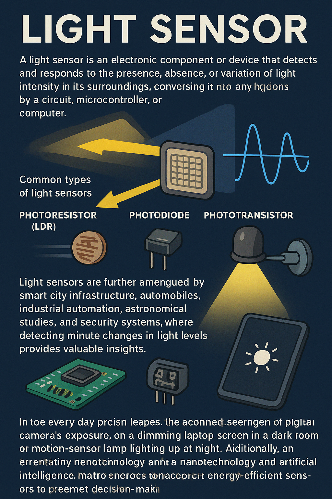

LIGHT SENSOR
A light sensor is an electronic component or device that detects and responds to the presence, absence, or variation of
light intensity in its surroundings, and it plays a vital role in countless modern applications ranging from everyday
consumer electronics to advanced industrial systems. At its core, a light sensor works by converting light energy,
typically in the form of photons, into an electrical signal that can be measured and processed by a circuit,
microcontroller, or computer. The most common types of light sensors include photoresistors (LDRs), photodiodes, and
phototransistors, each with distinct working principles and sensitivity levels. For example, a photoresistor changes its
electrical resistance when exposed to light—its resistance decreases as light intensity increases, which makes it
extremely useful in simple circuits like automatic streetlights, night lamps, and display brightness controllers. On the
other hand, photodiodes and phototransistors provide faster response times and higher accuracy by generating current or
voltage when struck by photons, and they are widely used in optical communication systems, remote controls, and safety
equipment like smoke detectors. In more advanced contexts, light sensors are also designed to detect specific ranges of
the light spectrum, such as infrared or ultraviolet, enabling them to serve in applications like flame detection, motion
sensing, and medical equipment. Their significance is further amplified when integrated with microcontrollers such as
Arduino or Raspberry Pi, as this allows the captured data about environmental light conditions to be analyzed, stored,
and used to trigger automated responses, such as adjusting the brightness of a smartphone screen or controlling
greenhouse lighting for optimized plant growth. Light sensors also play a key role in smart city infrastructure, where
they regulate streetlights based on ambient light levels to save energy, and in automobiles, where they automatically
switch headlights on or off depending on daylight conditions. Additionally, they are crucial in industrial automation,
astronomical studies, and security systems, where detecting even minute changes in light levels can provide valuable
insights. In everyday life, we interact with light sensors more than we realize—whether through the automatic adjustment
of a digital camera’s exposure, the screen of a laptop dimming in a dark room, or a motion-sensor lamp lighting up at
night. Their design is also evolving with the advent of nanotechnology and artificial intelligence, leading to sensors
that are not only more compact and energy-efficient but also capable of interpreting complex lighting patterns for
advanced decision-making systems. In essence, the light sensor is a small but incredibly powerful device that bridges
the natural world of light with the technological world of electronics, enabling machines to perceive and react to their
environment in ways that make modern life more efficient, safe, and intelligent.